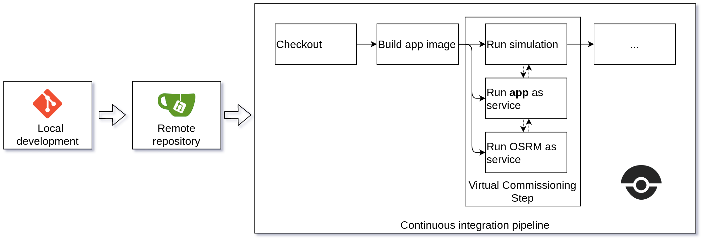
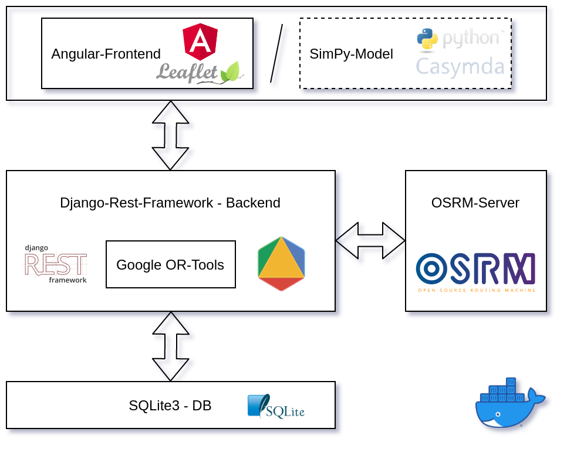
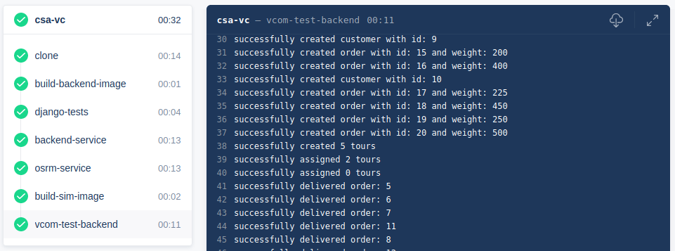

Logistics Process Models for Automated Integration Testing
Continuous Integration and Virtual Commissioning of Logistics Software

The planning and design of logistics systems - both at supply-chain and intralogistics level - is frequently supported by simulation studies, used for comparing design alternatives, assessing their feasibility, as well as estimating KPIs like lead-time or throughput.
When it comes to the realization phase of logistics systems, major challenges relate to the development of controls and operational IT systems.
Given the fact that testing, integration, commissioning (and bug-fixing) of these systems tend to consume a significant chunk of the realization phase, it becomes clear that it is beneficial to test a developed system as early as possible - even before physical construction takes place.
Virtual Commissioning describes the testing of software against the digital counterpart of a real system, making use of simulation models to emulate real-world interaction.
This post will show an example of how the integration of simulation-based testing into today’s agile software development processes can look like, investigating a case-study on order management & delivery optimization.
Get the repo from github: https://github.com/fladdimir/csa-vcom
1. Scenario & Scope
Remember La Pâtisserie, the small French bakery in Hamburg-Altona, which was experiencing a massive shift of demand towards at-home delivery of their sweet pastries?
Having evaluated different options of how to scale their business-model with help of an innovative open-source approach to urban delivery network simulation, the growing network now gets harder and harder to manage, calling for an increased software-based support of the bakery’s daily logistics operations…
2. Processes & Requirements
To be able to focus on their core-competencies (to conjure up delicious treats, instead of fighting intractably inconsistent spread-sheet data), our bakery decides to go for a web-based logistics planning application.
The core processes to be supported are:
- Registration of customers, and tracking their orders
- Managing locations of the depots to plan the best-possible deliveries
- Keeping track of the trucks, delivering goods according to the planned tours
The following BPMN-diagram shows the the processes and a simple token-flow animation:
3. Test First: Simulation Model + Build-Pipeline
To make sure that all required processes are adequatly supported by the developed software, our bakery’s software development division opts for a test-driven approach, backed by a build-pipeline which automatically checks all code pushed to the repository.
Based on the specified business process a
Casymda simulation model is generated, ready to emulate the real system, with which the developed software is supposed to work.
As processes and scope of the application change, the simulation model is evolved in an agile way.
Gitea and Drone form the basis of the continuous integration infrastructure. As part of a virtual commissioning step, the pipeline spins up the application in a service-container, against which the simulation model runs the test-scenario, emulating interaction and verifying the expected behavior of the software.

The pipeline is described by a .drone.yml file. Note that the pipeline could be improved in various ways, e.g. by properly waiting for the app (service) to become available for the simulation-step. A docker-compose.yml allows to start the gitea+drone setup locally (using a single-instance setup, which is not ideal, but sufficient for testing).
4. Application Design & Implementation
Our bakery’s app is dealing with management of the data of customers, orders, depots, tours, and trucks. Additionally, it is required to support planning the delivery process by calculating efficient tours and assigning them to available trucks.
The app adopts a basic 3-layer structure consisting of a browser-based ui, a backend containing the business logic and optimization algorithms, and a persisting database. The graphic below summarizes the setup, including the simulation model which acts as a client in the automated build pipeline:

The backend is implemented using Django+ Django-Rest-Framework, and relying on Google-OR-Tools for optimization tasks. Tour planning is modeled as a capacitated vehicle routing problem with multiple depots. For an optimal assignment of pending tours to available trucks, OR-Tools offers a minimum-cost-flow solver which is used on a corresponding bi-partite graph.
To create the required distance matrices, we can utilize the Open Source Routing Machine, provided as a ready-to-use Docker image ( OSRM-in-a-box). OSRM offers a convenient API which is synchronously consumed upon creation of a new customer or depot. Open-street-map data can be downloaded e.g. from https://download.geofabrik.de. The map of Hamburg has a size of ~35 MB and OSRM-preprocessing (car-profile) takes about 30 seconds (i5 dual-core notebook processor).
SQLite provides a simple database solution, however, Django makes it easy to switch to a client/server RDBMS like Postgres or MariaDB.
The basic frontend is built with Angular, Material, and Leaflet.js (easy to integrate thanks to ngx-leaflet).
5. Result
The screencast below shows the workflow from a users perspective. It comprises registering a new customer, issuing an order, planning tours, assignment to a truck, and tracking deliveries as the tour proceeds:
The shown process matches the one executed by the simulation model in the virtual commissioning pipeline build step, ensuring stable functionality for every version of the software:

Extensive and automated integration testing with simulation models can help to enable and sustain software quality, particularly in the context of process-centric logistics applications. As we’ve seen, today’s software development tools and standards allow for an efficient integration of simulation techniques & virtual commissioning approaches into the development process.